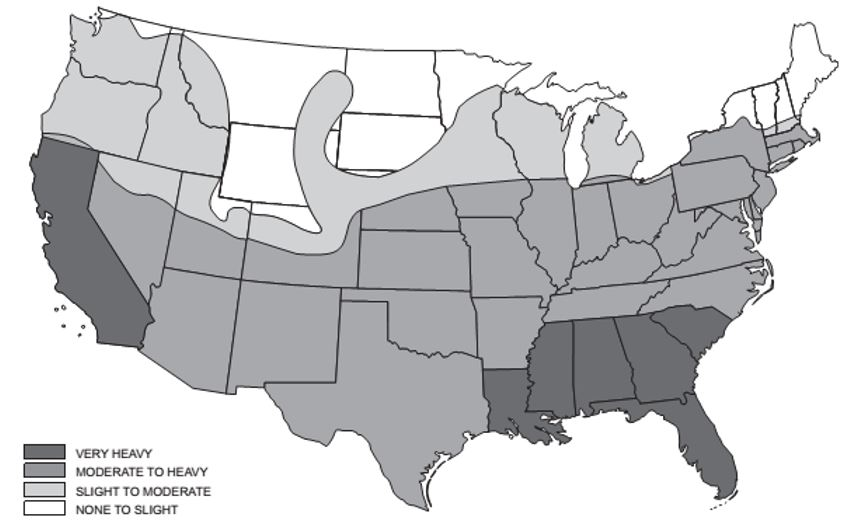

These provisions shall govern the materials, design, application, construction and installation of foam plastic, foam plastic insulation, plastic veneer, interior plastic finish and trim, light-transmitting plastics and plastic composites, including plastic lumber. See Chapter 14 for requirements for exterior wall finish and trim.
2601.2 Exterior wall coverings.
The use of plastics in exterior wall coverings is subject to the following limitations:
1. Exterior wall coverings containing plastics shall not be permitted on Type IV construction utilizing cross-laminated timber (CLT) or structural composite lumber (SCL) complying with Section 602.4.
2. Exterior wall coverings containing plastics shall not be permitted at exterior balconies and shall comply with Section 1406.3.
Exception: Combustible water-resistive barriers complying with Section 1403.5.1.
2601.2.1 Construction documents.
Construction documents for exterior wall coverings required to be tested to NFPA 285 by this chapter shall comply with the requirements of Section 1401.2.
Section BC 2602: Definitions
2602.1 General.
The following terms are defined in Chapter 2:
FIBER REINFORCED POLYMER.
FIBERGLASS REINFORCED POLYMER.
FOAM PLASTIC INSULATION.
LIGHT-DIFFUSING SYSTEM.
LIGHT-TRANSMITTING PLASTIC ROOF PANELS.
LIGHT-TRANSMITTING PLASTIC WALL PANELS.
PLASTIC, APPROVED.
PLASTIC COMPOSITE.
PLASTIC GLAZING.
PLASTIC LUMBER.
THERMOPLASTIC MATERIAL.
THERMOSETTING MATERIAL.
WOOD/PLASTIC COMPOSITE.
Section BC 2603: Foam Plastic Insulation
2603.1 General.
The provisions of this section shall govern the requirements and uses of foam plastic insulation in buildings and structures.
2603.2 Labeling and identification.
Packages and containers of foam plastic insulation and foam plastic insulation components delivered to the job site shall bear the label of an approved agency showing the manufacturer's name, product listing, product identification and information sufficient to determine that the end use will comply with the code requirements.
2603.3 Surface-burning characteristics.
Unless otherwise indicated in this section, foam plastic insulation and foam plastic cores of manufactured assemblies shall have a flame spread index of not more than 75 and a smoke-developed index of not more than 450 where tested in the maximum thickness intended for use in accordance with ASTM E 84 or UL 723. Loose fill-type foam plastic insulation shall be tested as board stock for the flame spread and smoke-developed indexes.
Exceptions:
1. Foam plastic interior trim shall comply with the flame spread and smoke-developed indexes as provided for in Section 2604.2.
2. In cold storage buildings, ice plants, food plants, food processing rooms and similar areas, foam plastic insulation where tested in a thickness of 4 inches (102 mm) shall be permitted in a thickness up to 10 inches (254 mm) where the building is equipped throughout with an automatic fire sprinkler system in accordance with Section 903.3.1.1. The approved automatic sprinkler system shall be provided in both the room and that part of the building in which the room is located.
3. Foam plastic insulation that is a part of a Class A, B or C roof-covering assembly shall be exempt from the flame spread requirements of this section provided the assembly with the foam plastic insulation satisfactorily passes NFPA 276 or UL 1256. The smoke-developed index shall not be limited for roof applications.
4. Foam plastic insulation greater than 4 inches (102 mm) in thickness shall have a maximum flame spread index of 75 and a smoke-developed index of 450 where tested at a minimum thickness of 4 inches (102 mm), provided the end use is approved in accordance with Section 2603.9 using the thickness and density intended for use.
5. Foam plastic interior signs in covered mall buildings shall not be required to comply with the flame spread and smoke-developed indexes of this section, provided the signs comply with Section 402.6.4.
2603.4 Thermal barrier.
Except as provided for in Sections 2603.4.1 and 2603.9, foam plastic shall be separated from the interior of a building by an approved thermal barrier of 1/2-inch (12.7 mm) gypsum wallboard or equivalent thermal barrier material that will limit the average temperature rise of the unexposed surface to not more than 250°F (120°C) after 15 minutes of fire exposure, complying with the standard time-temperature curve of ASTM E 119 or UL 263. The thermal barrier shall be installed in such a manner that it will remain in place for 15 minutes based on FM 4880, UL 1040, NFPA 286 or UL 1715. Combustible concealed spaces shall comply with Section 719 of this code.
Exception: Thermal barriers for exterior walls shall comply with Section 2603.5.2.
2603.4.1 Thermal barrier not required.
The thermal barrier specified in Section 2603.4 is not required under the conditions set forth in Sections 2603.4.1.1 through 2603.4.1.14.
2603.4.1.1 Masonry or concrete construction.
A thermal barrier is not required for foam plastic insulation installed in a masonry or concrete wall, floor or roof system where the foam plastic insulation is covered on each face by not less than 1 inch (25 mm) thickness of masonry or concrete.
Editor's note: For related unconsolidated provisions, see Appendix A at L.L. 2014/051.
2603.4.1.2 Cooler and freezer walls.
Foam plastic installed in a maximum thickness of 10 inches (254 mm) in cooler and freezer walls shall be permitted without thermal barrier, provided that the walls:
1. Have a flame spread index of 25 or less and a smoke-developed index of not more than 450, where tested in a minimum 4-inch (102 mm) thickness.
2. Have flash ignition and self-ignition temperatures of not less than 600°F and 800°F (316°C and 427°C), respectively.
3. Have a covering of not less than 0.032-inch (0.8 mm) aluminum or corrosion-resistant steel having a base metal thickness not less than 0.0160 inch (0.4 mm) at any point.
4. Be protected by an automatic sprinkler system in accordance with Section 903.3.1.1. Where the cooler or freezer is within a building, both the cooler or freezer and that part of the building in which it is located shall be sprinklered.
2603.4.1.3 Walk-in coolers.
In nonsprinklered buildings, foam plastic having a thickness that does not exceed 4 inches (102 mm) and a maximum flame spread index of 75 is permitted without thermal barrier in walk-in coolers or freezer units where the aggregate floor area does not exceed 400 square feet (37 m
2
) and the foam plastic is covered by a metal facing not less than 0.032-inch-thick (0.81 mm) aluminum or corrosion-resistant steel having a minimum base metal thickness of 0.016 inch (0.41 mm). A thickness of up to 10 inches (254 mm) is permitted where protected by a thermal barrier.
2603.4.1.4 Exterior walls – one-story buildings.
For one-story buildings, foam plastic having a flame spread index of 25 or less, and a smoke-developed index of not more than 450, shall be permitted without thermal barriers in or on exterior walls in a thickness not more than 4 inches (102 mm) where the foam plastic is covered by a thickness of not less than 0.032-inch-thick (0.81 mm) aluminum or corrosion-resistant steel having a base metal thickness of 0.0160 inch (0.41 mm) and the building is equipped throughout with an automatic sprinkler system in accordance with Section 903.3.1.1.
2603.4.1.5 Roofing.
A thermal barrier is not required for foam plastic insulation that is a part of a Class A, B or C roof-covering assembly that is installed in accordance with the code and the manufacturer's instructions and is either constructed as described in Item 1 or tested as described in Item 2.
1. The roof assembly is separated from the interior of the building by wood structural panel sheathing not less than 0.47 inch (11.9 mm) in thickness bonded with exterior glue, with edges supported by blocking, tongue-and-groove joints or other approved type of edge support, or an equivalent material.
2. The assembly with the foam plastic insulation satisfactorily passes NFPA 276 or UL 1256.
2603.4.1.6 Attics and crawl spaces.
Within an attic or crawl space where entry is made only for service of utilities, foam plastic insulation shall be permitted without thermal barrier if protected against ignition by 1 1/2-inch-thick (38 mm) mineral fiber insulation; 1/4-inch-thick (6.4 mm) wood structural panel, particleboard or hardboard; 3/8-inch (9.5 mm) gypsum wallboard, corrosion-resistant steel having a base metal thickness of 0.016 inch (0.4 mm); 1 1/2-inch thick (38 mm) self-supported spray-applied cellulose insulation in attic spaces only or other approved material installed in such a manner that the foam plastic insulation is not exposed. The protective covering shall be consistent with the requirements for the type of construction.
2603.4.1.7 Doors not required to have a fire protection rating.
Where pivoted or side-hinged doors are permitted without a fire protection rating, foam plastic insulation, having a flame spread index of 75 or less and a smoke-developed index of not more than 450, shall be permitted as a core material without a thermal barrier where the door facing is of metal having a minimum thickness of 0.032-inch (0.8 mm) aluminum or steel having a base metal thickness of not less than 0.016 inch (0.4 mm) at any point.
2603.4.1.8 Exterior doors in buildings of Group R-2 or R-3.
In occupancies classified as Group R-2 or R-3, foam-filled exterior entrance doors to individual dwelling units that do not require a fire-resistance rating shall be permitted without a thermal barrier, provided that the doors are faced with aluminum, steel, fiberglass, wood or other approved materials.
2603.4.1.9 Garage doors.
Where garage doors are permitted without a fire-resistance rating and foam plastic is permitted as a core material, provided that the door facing shall be metal having a minimum thickness of 0.032-inch (0.8 mm) aluminum or 0.010-inch (0.25 mm) steel or the facing shall be minimum 0.125-inch-thick (3.2 mm) wood. Garage doors having facings other than those described above shall be tested in accordance with, and meet the acceptance criteria of DASMA 107.
2603.4.1.9.1 Garage doors in one- and two-family dwellings.
Garage doors using foam plastic insulation complying with Section 2603.3 in detached and attached garages associated with one- and two-family dwellings need not be provided with a thermal barrier.
2603.4.1.10 Siding backer board.
Foam plastic insulation of not more than 2,000 British thermal units per square foot (Btu/sq. ft.) (22.7 MJ/m
2
) as determined by NFPA 259 shall be permitted as a siding backer board with a maximum thickness of 1/2-inch (12.7 mm) without a thermal barrier, provided it is separated from the interior of the building by not less than 2 inches (51 mm) of mineral fiber insulation or equivalent or where applied as insulation over existing wall construction.
2603.4.1.11 Interior trim.
Foam plastic used as interior trim in accordance with Section 2604 shall be permitted without a thermal barrier.
2603.4.1.12 Interior signs.
Foam plastic used for interior signs in covered mall buildings in accordance with Section 402.6.4 of this code shall be permitted without a thermal barrier. Foam plastic signs that are not affixed to interior building surfaces shall comply with Chapter 8 of the New York City Fire Code.
2603.4.1.13 Type V construction.
Foam plastic spray applied to a sill plate, joist header and rim joist in Type V construction is permitted without a thermal barrier, subject to all of the following:
1. The maximum thickness of the foam plastic shall be 3 1/4 inches (82.6 mm).
2. The density of the foam plastic shall be in the range of 1.5 to 2.0 pcf (24 to 32 kg/m
3
).
3. The foam plastic shall have a flame spread index of 25 or less and an accompanying smoke-developed index of 450 or less when tested in accordance with ASTM E 84 or UL 723.
2603.4.1.14 Floors.
The thermal barrier specified in Section 2603.4 is not required to be installed on the walking surface of a structural floor system that contains foam plastic insulation when the foam is covered by a minimum nominal 1/2-inch-thick (12.7 mm) wood structural panel or approved equivalent. The thermal barrier specified in Section 2603.4 is required on the underside of the structural floor system that contains foam plastic insulation when the underside of the structural floor system is exposed to the interior of the building.
Exception: Foam plastic used as part of an interior floor finish.
2603.5 Exterior walls of buildings of any height.
Exterior walls of buildings of Type I, II, III or IV construction of any height shall comply with 2603.5.1 through 2603.5.7. Exterior walls of cold storage buildings required to be constructed of noncombustible materials, where the building is more than one story in height, shall comply with the provisions of Sections 2603.5.1 through 2603.5.7. Exterior walls of buildings of Type V construction shall comply with Sections 2603.2, 2603.3 and 2603.4.
2603.5.1 Fire-resistance-rated walls.
Where the wall is required to have a fire-resistance rating, data based on tests conducted in accordance with ASTM E 119 or UL 263 shall be provided to substantiate that the fire-resistance rating is maintained.
2603.5.2 Thermal barrier.
Any foam plastic insulation shall be separated from the building interior by a thermal barrier meeting the following provisions, unless special approval is obtained on the basis of Section 2603.9. For exterior walls, foam plastic shall be separated from the interior of a building by an approved thermal barrier of 5/8-inch (15.9 mm) Type X gypsum wallboard or equivalent thermal barrier material that will limit the average temperature rise of the unexposed surface to not more than 250°F (120°C) after 20 minutes of fire exposure, complying with the standard time-temperature curve of ASTM E 119 or UL 263. The thermal barrier shall be installed in accordance with criteria established by testing performed in accordance with FM 4880, UL 1040, NFPA 286 or UL 1715, where the thermal barrier shall remain in place for 20 minutes. Combustible concealed spaces shall comply with Section 718 of this code.
Exception: One-story buildings complying with Section 2603.4.1.4.
2603.5.3 Potential heat.
The potential heat of foam plastic insulation in any portion of the wall or panel shall not exceed the potential heat expressed in Btu per square foot (mJ/m
2
) of the foam plastic insulation contained in the wall assembly tested in accordance with Section 2603.5.5. The potential heat of the foam plastic insulation shall be determined by tests conducted in accordance with NFPA 259 and the results shall be expressed in Btu per square foot (mJ/m
2
).
Exception: One-story buildings complying with Section 2603.4.1.4.
2603.5.4 Flame spread and smoke-developed indexes.
Foam plastic insulation, exterior coatings and facings shall be tested separately in the thickness intended for use, but not to exceed 4 inches (102 mm), and shall each have a flame spread index of 25 or less and a smoke-developed index of 450 or less as determined in accordance with ASTM E 84 or UL 723.
Exception: Prefabricated or factory-manufactured panels having minimum 0.020-inch (0.51 mm) aluminum facings and a total thickness of 1/4-inch (6.4 mm) or less are permitted to be tested as an assembly where the foam plastic core is not exposed in the course of construction.
2603.5.5 Vertical and lateral fire propagation.
The exterior wall assembly shall be tested in accordance with and comply with the acceptance criteria of NFPA 285. NFPA 285 design documentation of the tested exterior wall assembly shall be included on the submitted construction documents complying with Section 2601.2.1.
Exceptions:
1. One-story buildings complying with Section 2603.4.1.4.
2. Wall assemblies where the foam plastic insulation is covered on each face by not less than 1 inch (25 mm) thickness of masonry or concrete and meeting one of the following:
2.1. There is no airspace between the insulation and the concrete or masonry.
2.2. The insulation has a flame spread index of not more than 25 as determined in accordance with ASTM E 84 or UL 723 and the maximum airspace between the insulation and the concrete or masonry is not more than 1 inch (25 mm).
2603.5.5.1 Fireblocking.
Exterior wall coverings containing foam plastic insulation shall be fireblocked in accordance with Section 718.2.6.1.
2603.5.6 Label required.
The edge or face of each piece, package or container of foam plastic insulation shall bear the label of an approved agency. The label shall contain the manufacturer's or distributor's identification, model number, serial number or definitive information describing the product or materials' performance characteristics and approved agency's identification.
2603.5.7 Ignition.
Exterior walls shall not exhibit sustained flaming where tested in accordance with NFPA 268. Where a material is intended to be installed in more than one thickness, tests of the minimum and maximum thickness intended for use shall be performed.
Exception: Assemblies protected on the outside with one of the following:
1. A thermal barrier complying with Section 2603.5.2.
2. A minimum 1-inch (25 mm) thickness of concrete or masonry.
3. Glass-fiber-reinforced concrete panels of a minimum thickness of 3/8-inch (9.5 mm).
4. Metal-faced panels having minimum 0.019-inch-thick (0.48 mm) aluminum or 0.016-inch thick (0.41 mm) corrosion-resistant steel outer facings.
5. A minimum 7/8-inch (22.2 mm) thickness of stucco complying with Section 2510.
6. A minimum 1/4-inch (6.4 mm) thickness of fiber-cement lap, panel or shingle siding complying with Sections 1405.16 and 1405.16.1 or 1405.16.2.
2603.5.8 Special inspection.
Foam plastic insulation in exterior wall coverings shall be subject to special inspection in accordance with Chapter 17.
2603.6 Roofing assembly.
Foam plastic insulation meeting the requirements of Sections 2603.2, 2603.3 and 2603.4 shall be permitted as part of a roof-covering assembly, provided the assembly with the foam plastic insulation is a Class A, B or C roofing assembly where tested in accordance with ASTM E 108 or UL 790.
2603.7 Foam plastic insulation used as interior finish or interior trim in plenums.
Foam plastic insulation used as interior wall or ceiling finish or as interior trim in plenums shall exhibit a flame spread index of 75 or less and a smoke-developed index of 450 or less when tested in accordance with ASTM E 84 or UL 723 and shall comply with one or more of Sections 2603.7.1, 2603.7.2 and 2607.3.
2603.7.1 Separation required.
The foam plastic insulation shall be separated from the plenum by a thermal barrier complying with Section 2603.4 and shall exhibit a flame spread index of 75 or less and a smoke-developed index of 450 or less when tested in accordance with ASTM E 84 or UL 723 at the thickness and density intended for use.
2603.7.2 Approval.
The foam plastic insulation shall exhibit a flame spread index of 25 or less and a smoke-developed index of 50 or less when tested in accordance with ASTM E 84 or UL 723 at the thickness and density intended for use and shall meet the acceptance criteria of Section 803.1.2 when tested in accordance with NFPA 286. The foam plastic insulation shall be approved based on tests conducted in accordance with Section 2603.9.
2603.7.3 Covering.
The foam plastic insulation shall be covered by corrosion-resistant steel having a base metal thickness of not less than 0.0160 inch (0.4 mm) and shall exhibit a flame spread index of 75 or less and a smoke-developed index of 450 or less when tested in accordance with ASTM E 84 or UL 723 at the thickness and density intended for use.
2603.8 Protection against termites.
In areas where the probability of termite infestation is very heavy in accordance with Figure 2603.8, extruded and expanded polystyrene, polyisocyanurate and other foam plastics shall not be installed on the exterior face or under interior or exterior foundation walls or slab foundations located below grade. The clearance between foam plastics installed above grade and exposed earth shall be not less than 6 inches (152 mm).
Exceptions:
1. Buildings where the structural members of walls, floors, ceilings and roofs are entirely of noncombustible materials or preservative-treated wood;
2. An approved method of protecting the foam plastic and structure from subterranean termite damage is provided; or
3. On the interior side of basement and cellar walls.

Figure 2603.8 Termite Infestation Probability Map
2603.9 Special approval.
Foam plastic shall not be required to comply with the requirements of Sections 2603.4 or 2603.6 where specifically approved by the department based on large-scale tests such as, but not limited to, NFPA 286 (with the acceptance criteria of Section 803.1.2.1 of this code), FM 4880, UL 1040 or UL 1715. Such testing shall be related to the actual end-use configuration and be performed on the finished manufactured foam plastic assembly in the maximum thickness intended for use. Foam plastics that are used as interior finish on the basis of special tests shall also conform to the flame spread and smoke-developed index requirements of Chapter 8. Assemblies tested shall include seams, joints and other typical details used in the installation of the assembly and shall be tested in the manner intended for use.
2603.10 Wind resistance.
Foam plastic insulation complying with ASTM C 578 and ASTM C 1289 and used as exterior wall sheathing on framed wall assemblies shall comply with ANSI/FS 100 for wind pressure resistance and withstand the loads indicated in Chapter 16 of this code.
2603.11 Cladding attachment over foam sheathing to masonry or concrete wall construction.
Cladding shall be specified and installed in accordance with Chapter 14 and the cladding manufacturer's installation instructions or an approved design. Foam sheathing shall be attached to masonry or concrete construction in accordance with the insulation manufacturer's installation instructions or an approved design. Furring and furring attachments through foam sheathing shall be designed to resist design loads determined in accordance with Chapter 16, including support of cladding weight as applicable. Fasteners used to attach cladding or furring through foam sheathing to masonry or concrete substrates shall be approved for application into masonry or concrete material and shall be installed in accordance with the fastener manufacturer's installation instructions.
Exceptions:
1. Where the cladding manufacturer has provided approved installation instructions for application over foam sheathing and connection to a masonry or concrete substrate, those requirements shall apply.
2. For exterior insulation and finish systems, refer to Section 1408.
3. For anchored masonry or stone veneer installed over foam sheathing, refer to Section 1405.
2603.12 Cladding attachment over foam sheathing to cold-formed steel framing.
Cladding shall be specified and installed in accordance with Chapter 14 and the cladding manufacturer's approved installation instructions, including any limitations for use over foam plastic sheathing, or an approved design. Where used, furring and furring attachments shall be designed to resist design loads determined in accordance with Chapter 16. In addition, the cladding or furring attachments through foam sheathing to framing shall meet or exceed the minimum fastening requirements of Sections 2603.12.1 and 2603.12.2, or an approved design for support of cladding weight.
Exceptions:
1. Where the cladding manufacturer has provided approved installation instructions for application over foam sheathing, those requirements shall apply.
2. For exterior insulation and finish systems, refer to Section 1408.
3. For anchored masonry or stone veneer installed over foam sheathing, refer to Section 1405.
2603.12.1 Direct attachment.
Where cladding is installed directly over foam sheathing without the use of furring, cladding minimum fastening requirements to support the cladding weight shall be as specified in Table 2603.12.1.
Table 2603.12.1 Cladding Minimum Fastening Requirements for Direct Attachment over Foam Plastic Sheathing to Support Cladding Weight a
Cladding Fastener Through Foam Sheathing Into:
Cladding Fastener Type and Minimum Size b
Cladding Fastener Vertical Spacing (inches)
Maximum Thickness of Foam Sheathing c (inches)
162 o.c. fastener horizontal spacing
242 o.c. fastener horizontal spacing
Cladding weight
Cladding weight
3 psf
11 psf
25 psf
3 psf
11 psf
25 psf
Steel framing (minimum penetration of steel thickness plus 3 threads)
#8 screw into 33 mil steel or thicker
6
3
3
1.5
3
2
DR
8
3
2
0.5
3
1.5
DR
12
3
1.5
DR
3
0.75
DR
#10 screw into 33 mil steel
6
4
3
2
4
3
0.5
8
4
3
1
4
2
DR
12
4
2
DR
3
1
DR
#10 screw into 43 mil steel or thicker
6
4
4
3
4
4
2
8
4
4
2
4
3
1.5
12
4
3
1.5
4
3
DR
For SI: 1 inch = 25.4 mm; 1 pound per square foot (psf) = 0.0479 kPa, 1 pound per square inch = 0.00689 MPa.
DR = design required; o.c. = on center.
a. Steel framing shall be minimum 33 ksi steel for 33 mil and 43 mil steel and 50 ksi steel for 54 mil steel or thicker.
b. Screws shall comply with the requirements of AISI S240.
c. Foam sheathing shall have a minimum compressive strength of 15 pounds per square inch in accordance with ASTM C 578 or ASTM C 1289.
2603.12.2 Furred cladding attachment.
Where steel or wood furring is used to attach cladding over foam sheathing, furring minimum fastening requirements to support the cladding weight shall be as specified in Table 2603.12.2. Where placed horizontally, wood furring shall be preservative-treated wood in accordance with Section 2303.1.9 or naturally durable wood and fasteners shall be corrosion resistant in accordance Section 2304.10.5. Steel furring shall have a minimum G60 galvanized coating.
Table 2603.12.2 Furring Minimum Fastening Requirements for Application over Foam Plastic Sheathing to Support Cladding Weight a
Furring Material
Framing Member
Fastener Type and Minimum Size b
Minimum Penetration into Wall Framing (inches)
Fastener Spacing in Furring (inches)
Maximum Thickness of Foam Sheathing 4* (inches)
162 o.c. furring e
242 o.c. furring e
Cladding weight
Cladding weight
3 psf
11 psf
25 psf
3 psf
11 psf
25 psf
Furring Material
Framing Member
Fastener Type and Minimum Size b
Minimum Penetration into Wall Framing (inches)
Fastener Spacing in Furring (inches)
Maximum Thickness of Foam Sheathing 4* (inches)
162 o.c. furring e
242 o.c. furring e
Cladding weight
Cladding weight
3 psf
11 psf
25 psf
3 psf
11 psf
25 psf
Minimum 33 mil steel furring or minimum 1x wood furring
c
33 mil steel stud
#8 screw
Steel thickness plus 3 threads
12
3
1.5
DR
3
0.5
DR
16
3
1
DR
2
DR
DR
24
2
DR
DR
2
DR
DR
#10 screw
Steel thickness plus 3 threads
12
4
2
DR
4
1
DR
16
4
1.5
DR
3
DR
DR
24
3
DR
DR
2
DR
DR
43 mil or thicker steel stud
#8 screw
Steel thickness plus 3 threads
12
3
1.5
DR
3
0.5
DR
16
3
1
DR
2
DR
DR
24
2
DR
DR
2
DR
DR
#10 screw
Steel thickness plus 3 threads
12
4
3
1.5
4
3
DR
16
4
3
0.5
4
2
DR
24
4
2
DR
4
0.5
DR
For SI: 1 inch = 25.4 mm; 1 pound per square foot (psf) = 0.0479 kPa, 1 pound per square inch = 0.00689 MPa.
DR = design required; o.c. = on center.
a. Wood furring shall be Spruce-Pine fir or any softwood species with a specific gravity of 0.42 or greater. Steel furring shall be minimum 33 ksi steel. Steel studs shall be minimum 33 ksi steel for 33 mil and 43 mil thickness and 50 ksi steel for 54 mil steel or thicker.
b. Screws shall comply with the requirements of AISI S240.
c. Where the required cladding fastener penetration into wood material exceeds 3/4 inch and is not more than 1 1/2 inches, a minimum 2-inch nominal wood furring shall be used or an approved design.
d. Foam sheathing shall have a minimum compressive strength of 15 pounds per square inch in accordance with ASTM C 578 or ASTM C 1289.
e. Furring shall be spaced not more than 24 inches on center, in a vertical or horizontal orientation. In a vertical orientation, furring shall be located over wall studs and attached with the required fastener spacing. In a horizontal orientation, the indicated 8-inch and 12-inch fastener spacing in furring shall be achieved by use of two fasteners into studs at 16 inches and 24 inches on center, respectively.
* Editor's note: As set forth in L.L. 2021/126; correct footnote should likely be d.
Section BC 2604: Interior Finish and Trim
2604.1 General.
Plastic materials installed as interior finish or trim shall comply with Chapter 8. Foam plastics shall only be installed as interior finish where approved in accordance with the special provisions of Section 2603.9. Foam plastics that are used as interior finish shall also meet the flame and smoke-developed spread index requirements for interior finish in accordance with Chapter 8. Foam plastics installed as interior trim shall comply with Section 2604.2.
2604.2 Foam plastic interior trim.
Foam plastic used as interior trim shall comply with Sections 2604.2.1 through 2604.2.4.
2604.2.1 Density.
The minimum density of the interior trim shall be 20 pcf (320 kg/m
3
).
2604.2.2 Thickness.
The maximum thickness of the interior trim shall be 1/2-inch (12.7 mm) and the maximum width shall be 8 inches (204 mm).
2604.2.3 Area limitation.
The interior trim shall not constitute more than 10 percent of the specific wall or ceiling area to which it is attached.
2604.2.4 Flame spread.
The flame spread index shall not exceed 75 where tested in accordance with ASTM E 84 or UL 723. The smoke-developed index shall not be limited.
Exception: When the interior trim material has been tested as an interior finish in accordance with NFPA 286 and complies with the acceptance criteria in Section 803.1.2.1 of this code, it shall not be required to be tested for flame spread index in accordance with ASTM E 84 or UL 723.
Section BC 2605: Plastic Veneer
2605.1 Interior use.
Where used within a building, plastic veneer shall comply with the interior finish requirements of Chapter 8.
2605.2 Exterior use.
Exterior plastic veneer, other than plastic siding, shall be permitted to be installed on the exterior walls of buildings of any type of construction in accordance with all of the following requirements:
1. Plastic veneer shall comply with Section 2606.4.
2. Plastic veneer shall not be attached to any exterior wall to a height greater than 50 feet (15 240 mm) above grade.
3. Sections of plastic veneer shall not exceed 300 square feet (27.9 m
2
) in area and shall be separated by not less than 4 feet (1219 mm) vertically.
4. Fireblocking complying with Section 718.2.6.1 shall be installed.
Exception: The area and separation requirements and the smoke-density limitation are not applicable to plastic veneer applied to buildings constructed of Type VB construction, provided the walls are not required to have a fire-resistance rating.
2605.3 Plastic siding.
Polypropylene siding and vinyl siding shall comply with the requirements of Sections 1404 and 1405.
2605.4 Special inspection.
Plastic veneers shall be subject to special inspection in accordance with Chapter 17.
Section BC 2606: Light-Transmitting Plastics
2606.1 General.
The provisions of this section and Sections 2607 through 2611 shall govern the quality and methods of application of light-transmitting plastics for use as light-transmitting materials in buildings and structures. Foam plastics shall comply with Section 2603. Light-transmitting plastic materials that meet the other code requirements for walls and roofs shall be permitted to be used in accordance with the other applicable chapters of the code.
2606.2 Approval for use.
Sufficient technical data shall be submitted to substantiate the proposed use of any light-transmitting material, as approved by the department and subject to the requirements of this section.
2606.3 Identification.
Each unit or package of light-transmitting plastic shall be identified with a mark or decal satisfactory to the commissioner, which includes identification as to the material classification.
2606.4 Specifications.
Light-transmitting plastics, including thermoplastic, thermosetting or reinforced thermosetting plastic material, shall have a self-ignition temperature of 650°F (343°C) or greater where tested in accordance with ASTM D 1929; a smoke-developed index not greater than 450 where tested in the manner intended for use in accordance with ASTM E 84 or UL 723, or a maximum average smoke density rating not greater than 75 where tested in the thickness intended for use in accordance with ASTM D 2843 and shall conform to one of the following combustibility classifications:
Class CC1: Plastic materials that have a burning extent of 1 inch (25 mm) or less where tested at a nominal thickness of 0.060 inch (1.5 mm), or in the thickness intended for use, in accordance with ASTM D 635.
Class CC2: Plastic materials that have a burning rate of 2 1/2-inches per minute (1.06 mm/s) or less where tested at a nominal thickness of 0.060 inch (1.5 mm), or in the thickness intended for use, in accordance with ASTM D 635.
2606.5 Structural requirements.
Light-transmitting plastic materials in their assembly shall be of adequate strength and durability to withstand the loads indicated in Chapter 16. Technical data shall be submitted to establish stresses, maximum unsupported spans and such other information for the various thicknesses and forms used as deemed necessary by the department.
2606.6 Fastening.
Fastening shall be adequate to withstand the loads in Chapter 16. Proper allowance shall be made for expansion and contraction of light-transmitting plastic materials in accordance with accepted data on the coefficient of expansion of the material and other material in conjunction with which it is employed.
2606.7 Light-diffusing systems.
Light-diffusing systems shall comply with Sections 2606.7.1 through 2606.7.5. Light-diffusing systems shall not be installed in the following occupancies and locations:
1. Any room in which the net floor area per occupant is 20 square feet (1.86 m
2
) or less, or any room leading there from through which it is necessary for occupants to pass in order to reach the only exit.
2. Group I-2.
3. Group I-3.
4. Interior exit stairways, ramps and exit passageways.
2606.7.1 Support.
Light-transmitting plastic diffusers shall be supported directly or indirectly from ceiling or roof construction by use of noncombustible hangers. Hangers shall be not less than No. 12 steel-wire gage (0.106 inch) galvanized wire or equivalent.
Exception: Light-transmitting plastic diffusers used in suspended acoustical ceiling systems shall conform with the support requirements as set forth in Section 808.1.
2606.7.2 Installation.
Light-transmitting plastic diffusers shall comply with Chapter 8 unless the light-transmitting plastic diffusers will fall from the mountings before igniting, at an ambient temperature of not less than 200°F (111°C) below the ignition temperature of the panels. The panels shall remain in place at an ambient room temperature of 175°F (79°C) for a period of not less than 15 minutes.
2606.7.3 Size limitations.
Individual panels or units shall not exceed 10 feet (3048 mm) in length nor 30 square feet (2.79 m
2
) in area.
2606.7.4 Fire suppression system.
In buildings that are equipped throughout with an automatic sprinkler system in accordance with Section 903.3.1.1, plastic light-diffusing systems shall be protected both above and below unless the sprinkler system has been specifically approved for installation only above the light-diffusing system. Areas of light-diffusing systems that are protected in accordance with this section shall not be limited.
2606.7.5 Electrical luminaires.
Light-transmitting plastic panels and light-diffuser panels that are installed in approved electrical luminaires shall comply with the requirements of Chapter 8 unless the light-transmitting plastic panels conform to the requirements of Section 2606.7.2.
2606.8 Partitions.
Light-transmitting plastics used in or as partitions shall comply with the requirements of Chapters 6 and 8.
2606.9 Bathroom accessories.
Light-transmitting plastics shall be permitted as glazing in shower stalls, shower doors, bathtub enclosures and similar accessory units. Safety glazing shall be provided in accordance with Chapter 24.
2606.10 Awnings, patio covers and similar structures.
Awnings constructed of light-transmitting plastics shall be constructed in accordance with provisions specified in Section 3105 and Chapter 32 for projections. Patio covers constructed of light-transmitting plastics shall comply with Section 2606. Light-transmitting plastics used in canopies at motor fuel-dispensing facilities shall comply with Section 2606, except as modified by Section 406.7.2.
2606.11 Greenhouses.
Light-transmitting plastics shall be permitted in lieu of plain glass in greenhouses.
2606.12 Solar collectors.
Light-transmitting plastic covers on solar collectors having noncombustible sides and bottoms shall be permitted on buildings not over three stories above grade plane or 9,000 square feet (836.1 m
2
) in total floor area, provided the light-transmitting plastic cover does not exceed 33.33 percent of the roof area for CC1 materials or 25 percent of the roof area for CC2 materials.
Exception: Light-transmitting plastic covers having a thickness of 0.010 inch (0.3 mm) or less shall be permitted to be of any plastic material provided the area of the solar collectors does not exceed 33.33 percent of the roof area.
Section BC 2607: Light-Transmitting Plastic Wall Panels
2607.1 General.
Light-transmitting plastics shall be permitted to be used as wall panels in exterior walls, provided that the walls are not required to have a fire-resistance rating and the installation conforms to the requirements of this section. Such panels shall be erected and anchored on a foundation, waterproofed or otherwise protected from moisture absorption and sealed with a coat of mastic or other approved waterproof coating. Light-transmitting plastic wall panels shall comply with Section 2606.
Exception: Light-transmitting plastics shall not be used as wall panels in exterior walls in occupancies in Groups A-l, A-2, H, I-2 and I-3.
2607.2 Installation.
Exterior wall panels installed as provided for herein shall not alter the type of construction classification of the building.
2607.3 Height limitation.
Light-transmitting plastics shall not be installed more than 75 feet (22 860 mm) above grade plane, except as allowed by Section 2607.5.
2607.4 Area limitation and separation.
The maximum area of a single wall panel and minimum vertical and horizontal separation requirements for exterior light-transmitting plastic wall panels shall be as provided for in Table 2607.4. The maximum percentage of wall area of any story in light-transmitting plastic wall panels shall not exceed that indicated in Table 2607.4 or the percentage of unprotected openings permitted by Section 705.8, whichever is smaller.
Exceptions:
1. In structures provided with approved flame barriers extending 30 inches (760 mm) beyond the exterior wall in the plane of the floor, a vertical separation is not required at the floor except that provided by the vertical thickness of the flame barrier projection.
2. Veneers of approved weather-resistant light-transmitting plastics used as exterior siding in buildings of Type V construction in compliance with Section 1406.
3. The area of light-transmitting plastic wall panels in exterior walls of greenhouses shall be exempt from the area limitations of Table 2607.4 but shall be limited as required for unprotected openings in accordance with Section 705.8.
Table 2607.4 Area Limitation and Separation Requirements for Light-Transmitting Plastic Wall Panels a
Fire Separation Distance (feet)
Class of Plastic
Maximum Percentage Area of Exterior Wall in Plastic Wall Panels
Maximum Single Area of Plastic Wall Panels (square feet)
Minimum Separation of Plastic Wall Panels (feet)
Vertical
Horizontal
Fire Separation Distance (feet)
Class of Plastic
Maximum Percentage Area of Exterior Wall in Plastic Wall Panels
Maximum Single Area of Plastic Wall Panels (square feet)
Minimum Separation of Plastic Wall Panels (feet)
Vertical
Horizontal
Less than 6
—
Not Permitted
Not Permitted
—
—
6 or more but less than 11
CC1
10
50
8
4
CC2
Not Permitted
Not Permitted
—
—
11 or more but less than or equal to 30
CC1
25
90
6
4
CC2
15
70
8
4
Over 30
CC1
50
Not Limited
3
b
0
CC2
50
100
6
b
3
For SI: 1 foot = 304.8 mm, 1 square foot = 0.0929 m
2
.
a. For combinations of plastic glazing and plastic wall panel areas permitted, see Section 2607.6.
b. For reductions in vertical separation allowed, see Section 2607.4.
2607.5 Automatic sprinkler system.
Where the building is equipped throughout with an automatic sprinkler system in accordance with Section 903.3.1.1, the maximum percentage area of exterior wall in any story in light-transmitting plastic wall panels and the maximum square footage of a single area given in Table 2607.4 shall be increased 100 percent, but the area of light-transmitting plastic wall panels shall not exceed 50 percent of the wall area in any story, or the area permitted by Section 705.8 for unprotected openings, whichever is smaller. These installations shall be exempt from height limitations.
2607.6 Combinations of glazing and wall panels.
Combinations of light-transmitting plastic glazing and light-transmitting plastic wall panels shall be subject to the area, height and percentage limitations and the separation requirements applicable to the class of light-transmitting plastic as prescribed for light-transmitting plastic wall panel installations.
Section BC 2608: Light-Transmitting Plastic Glazing
2608.1 Buildings of Type VB construction.
Openings in the exterior walls of buildings of Type VB construction, where not required to be protected by Section 705, shall be permitted to be glazed or equipped with light-transmitting plastic. Light-transmitting plastic glazing shall comply with Section 2606.
2608.2 Buildings of other types of construction.
Openings in the exterior walls of buildings of types of construction other than Type VB, where not required to be protected by Section 705, shall be permitted to be glazed or equipped with light-transmitting plastic in accordance with Section 2606 and all of the following:
1. The aggregate area of light-transmitting plastic glazing shall not exceed 25 percent of the area of any wall face of the story in which it is installed. The area of a single pane of glazing installed above the first story above grade plane shall not exceed 16 square feet (1.5 m
2
) and the vertical dimension of a single pane shall not exceed 4 feet (1219 mm).
Exception: Where an automatic sprinkler system is provided throughout in accordance with Section 903.3.1.1, the area of allowable glazing shall be increased to not more than 50 percent of the wall face of the story in which it is installed with no limit on the maximum dimension or area of a single pane of glazing.
2. Approved flame barriers extending 30 inches (762 mm) beyond the exterior wall in the plane of the floor, or approved vertical panels not less than 4 feet (1219 mm) in height, shall be installed between glazed units located in adjacent stories.
Exception: Approved vertical panels not less than 3 feet (914 mm) in height or flame barriers extending 30 inches (762 mm) beyond the exterior wall shall be installed between glazed units located in adjacent stories in buildings equipped throughout with an automatic sprinkler system in accordance with Section 903.3.1.1.
3. Light-transmitting plastics shall not be installed more than 75 feet (22 860 mm) above grade level.
Exception: Buildings equipped throughout with an automatic sprinkler system in accordance with Section 903.3.1.1.
Section BC 2609: Light-Transmitting Plastic Roof Panels
2609.1 General.
Light-transmitting plastic roof panels shall comply with this section and Section 2606. Light-transmitting plastic roof panels shall not be installed in Groups H, I-2 and I-3. In all other groups, light-transmitting plastic roof panels shall comply with any one of the following conditions:
1. The building is equipped throughout with an automatic sprinkler system in accordance with Section 903.3.1.1.
2. The roof construction is not required to have a fire-resistance rating by Table 601.
3. The roof panels meet the requirements for roof coverings in accordance with Chapter 15.
2609.2 Separation.
Individual roof panels shall be separated from each other by a distance of not less than 4 feet (1219 mm) measured in a horizontal plane.
Exceptions:
1. The separation between roof panels is not required in a building equipped throughout with an automatic sprinkler system in accordance with Section 903.3.1.1.
2. The separation between roof panels is not required in low-hazard occupancy buildings complying with the conditions of Section 2609.4, Exception 2 or 3.
2609.3 Location.
Where exterior wall openings are required to be protected by Section 705.8, a roof panel shall not be installed within 6 feet (1829 mm) of such exterior wall.
2609.4 Area limitations.
Roof panels shall be limited in area and the aggregate area of panels shall be limited by a percentage of the floor area of the room or space sheltered in accordance with Table 2609.4.
Exceptions:
1. The area limitations of Table 2609.4 shall be permitted to be increased by 100 percent in buildings equipped throughout with an automatic sprinkler system in accordance with Section 903.3.1.1.
2. Low-hazard occupancy buildings, such as swimming pool shelters, shall be exempt from the area limitations of Table 2609.4, provided that the buildings do not exceed 5,000 square feet (465 m
2
) in area and have a minimum fire separation distance of 10 feet (3048 mm).
3. Greenhouses that are occupied for growing plants on a production or research basis, without public access, shall be exempt from the area limitations of Table 2609.4 provided they have a minimum fire separation distance of 4 feet (1220 mm).
4. Roof coverings over terraces and patios in Group R-3 occupancies shall be exempt from the area limitations of Table 2609.4.
Table 2609.4 Area Limitations for Light-Transmitting Plastic Roof Panels
Class of Plastic
Maximum Area of Individual Roof Panels (square feet)
Maximum Aggregate Area of Roof Panels (percent of floor area)
CC1
300
30
CC2
100
25
For SI: 1 square foot = 0.0929 m
2
.
Section BC 2610: Light-Transmitting Plastic Skylight Glazing
2610.1 Light-transmitting plastic glazing of skylight assemblies.
Skylight assemblies glazed with light-transmitting plastic shall conform to the provisions of this section and Section 2606. Unit skylights glazed with light-transmitting plastic shall comply with Section 2405.5.
Exception: Skylights in which the light-transmitting plastic conforms to the required roof-covering class in accordance with Section 1505.
2610.2 Mounting.
The light-transmitting plastic shall be mounted above the plane of the roof on a curb constructed in accordance with the requirements for the type of construction classification, but not less than 4 inches (102 mm) above the plane of the roof. Edges of the light-transmitting plastic skylights or domes shall be protected by metal or other approved noncombustible material, or the light-transmitting plastic dome or skylight shall be shown to be able to resist ignition where exposed at the edge to a flame from a Class B brand as described in ASTM E 108 or UL 790. The Class B brand test shall be conducted on a skylight that is elevated to a height as specified in the manufacturer's instructions, but not less than 4 inches (102 mm).
Exceptions:
1. Curbs shall not be required for skylights used on roofs having a minimum slope of three units vertical in 12 units horizontal (25-percent slope) in occupancies in Group R-3 and on buildings with a nonclassified roof covering.
2. The metal or noncombustible edge material is not required where nonclassified roof coverings are permitted.
2610.3 Slope.
Flat or corrugated light-transmitting plastic skylights shall slope not less than four units vertical in 12 units horizontal (4:12). Dome-shaped skylights shall rise above the mounting flange a minimum distance equal to 10 percent of the maximum width of the dome but not less than 3 inches (76 mm).
Exception: Skylights that pass the Class B Burning Brand Test specified in ASTM E 108 or UL 790 shall have no minimum slope requirement.
2610.4 Maximum area of skylights.
Each skylight shall have a maximum area within the curb of 100 square feet (9.3 m
2
).
Exception: The area limitation shall not apply where the building is equipped throughout with an automatic sprinkler system in accordance with Section 903.3.1.1 or the building is equipped with smoke and heat vents in accordance with Section 910.
2610.5 Aggregate area of skylights.
The aggregate area of skylights shall not exceed 33 1/3 percent of the floor area of the room or space sheltered by the roof in which such skylights are installed where Class CC1 materials are utilized, and 25 percent where Class CC2 materials are utilized.
Exception: The aggregate area limitations of light-transmitting plastic skylights shall be increased 100 percent beyond the limitations set forth in this section where the building is equipped throughout with an automatic sprinkler system in accordance with Section 903.3.1.1 or the building is equipped with smoke and heat vents in accordance with Section 910.
2610.6 Separation.
Skylights shall be separated from each other by a distance of not less than 4 feet (1219 mm) measured in a horizontal plane.
Exceptions:
1. Buildings equipped throughout with an automatic sprinkler system in accordance with Section 903.3.1.1.
2. In Group R-3, multiple skylights located above the same room or space with a combined area not exceeding the limits set forth in Section 2610.4.
2610.7 Location.
Where exterior wall openings are required to be protected in accordance with Section 705, a skylight shall not be installed within 6 feet (1829 mm) of such exterior wall.
2610.8 Combinations of roof panels and skylights.
Combinations of light-transmitting plastic roof panels and skylights shall be subject to the area and percentage limitations and separation requirements of Section 2609 applicable to roof panel installations.
Section BC 2611: Light-Transmitting Plastic Interior Signs
2611.1 General.
Light-transmitting plastic interior wall signs shall be limited as specified in Sections 2611.2 through 2611.4. Light-transmitting plastic interior wall signs in covered and open mall buildings shall comply with Section 402.6.4. Light-transmitting plastic interior signs shall also comply with Section 2606.
2611.2 Aggregate area.
The sign shall not exceed 20 percent of the wall area.
2611.3 Maximum area.
The sign shall not exceed 24 square feet (2.2 m
2
).
2611.4 Encasement.
Edges and backs of the sign shall be fully encased in metal.
Section BC 2612: Plastic Composites
2612.1 General.
Plastic composites shall consist of either wood/plastic composites or plastic lumber. Plastic composites shall comply with the provisions of this code and with the additional requirements of Section 2612.
2612.2 Labeling and identification.
Packages and containers of plastic composites used in exterior applications shall bear a label showing the manufacturer's name, product identification and information sufficient to determine that the end use will comply with code requirements.
2612.2.1 Performance levels.
The label for plastic composites used in exterior applications as deck boards, stair treads, handrails and guards shall indicate the required performance levels and demonstrate compliance with the provisions of ASTM D 7032.
2612.2.2 Loading.
The label for plastic composites used in exterior applications as deck boards, stair treads, handrails and guards shall indicate the type and magnitude of the load determined in accordance with ASTM D 7032.
2612.3 Flame spread index.
Plastic composites shall exhibit a flame spread index not exceeding 200 when tested in accordance with ASTM E 84 or UL 723 with the test specimen remaining in place during the test.
Exception: Materials determined to be noncombustible in accordance with Section 703.5.
2612.4 Termite and decay resistance.
Plastic composites containing wood, cellulosic or any other biodegradable materials shall be termite and decay resistant as determined in accordance with ASTM D 7032.
2612.5 Construction requirements.
Plastic composites shall be permitted to be used as exterior deck boards, stair treads, handrails and guards in buildings of Type VB construction.
2612.5.1 Span rating.
Plastic composites used as exterior deck boards shall have a span rating determined in accordance with ASTM D 7032.
2612.6 Plastic composite decking, handrails and guards.
Plastic composite decking, handrails and guards shall be installed in accordance with this code and the manufacturer's instructions.
Section BC 2613: Fiber-Reinforced Polymer
(Am. L.L. 2023/077, 6/11/2023, eff. 6/11/2023)
Editor's note: For related unconsolidated provisions, see Appendix A at L.L. 2023/077.
2613.1 General.
The provisions of this section shall govern the requirements and uses of fiber-reinforced polymer in and on buildings and structures.
2613.2 Labeling and identification.
Packages and containers of fiber-reinforced polymer and their components delivered to the job site shall bear the label of an approved agency showing the manufacturer's name, product listing, product identification and information sufficient to determine that the end use will comply with the code requirements.
2613.3 Interior finishes.
Fiber-reinforced polymer used as interior finishes, decorative materials or trim shall comply with Chapter 8.
2613.3.1 Foam plastic cores.
Fiber-reinforced polymer used as interior finish and which contains foam plastic cores shall comply with Chapter 8 and this chapter.
2613.4 Light-transmitting materials.
Fiber-reinforced polymer used as light-transmitting materials shall comply with Sections 2606 through 2611 as required for the specific application.
2613.5 Exterior use.
Fiber-reinforced polymer shall be permitted to be installed on the exterior walls of buildings of any type of construction when such polymers meet the requirements of Section 2603.5. Fireblocking shall be installed in accordance with Section 718.
Exceptions:
1. Compliance with Section 2603.5 is not required when all of the following conditions are met:
1.1. The fiber-reinforced polymer shall not exceed an aggregate total of 20 percent of the area of the specific wall to which it is attached, and no single architectural element shall exceed 10 percent of the area of the specific wall to which it is attached, and no contiguous set of architectural elements shall exceed 10 percent of the area of the specific wall to which they are attached.
1.2. The fiber-reinforced polymer shall have a flame spread index of 25 or less. The flame spread index requirement shall not be required for coatings or paints having a thickness of less than 0.036 inch (0.9 mm) that are applied directly to the surface of the fiber-reinforced polymer.
1.3. Fireblocking complying with Section 718.2.6 shall be installed.
1.4. The fiber-reinforced polymer shall be installed directly to a noncombustible substrate or be separated from the exterior wall by one of the following materials: corrosion-resistant steel having a minimum base metal thickness of 0.016 inch (0.41 mm) at any point, aluminum having a minimum thickness of 0.019 inch (0.5 mm) or other approved noncombustible material.
2. Compliance with Section 2603.5 is not required when the fiber-reinforced polymer is installed on buildings that are 40 feet (12 190 mm) or less above grade when all of the following conditions are met:
2.1. The fiber-reinforced polymer shall meet the requirements of Section 1406.2.
2.2. Where the fire separation distance is 5 feet (1524 mm) or less, the area of the fiber-reinforced polymer shall not exceed 10 percent of the wall area. Where the fire separation distance is greater than 5 feet (1524 mm), there shall be no limit on the area of the exterior wall coverage using fiber-reinforced polymer.
2.3. The fiber-reinforced polymer shall have a flame spread index of 200 or less. The flame spread index requirements do not apply to coatings or paints having a thickness of less than 0.036 inch (0.9 mm) that are applied directly to the surface of the fiber-reinforced polymer.
2.4. Fireblocking complying with Section 718.2.6 shall be installed.
Section BC 2614: Reflective Plastic Core Insulation
2614.1 General.
The provisions of this section shall govern the requirements and uses of reflective plastic core insulation in buildings and structures. Reflective plastic core insulation shall comply with the requirements of Section 2614.2 and of one of the following: Section 2614.3 or 2614.4.
2614.2 Identification.
Packages and containers of reflective plastic core insulation delivered to the job site shall show the manufacturer's or supplier's name, product identification and information sufficient to determine that the end use will comply with the code requirements.
2614.3 Surface-burning characteristics.
Reflective plastic core insulation shall have a flame spread index of not more than 25 and a smoke-developed index of not more than 450 when tested in accordance with ASTM E 84 or UL 723. The reflective plastic core insulation shall be tested at the maximum thickness intended for use. Test specimen preparation and mounting shall be in accordance with ASTM E 2599.
2614.4 Room corner test heat release.
Reflective plastic core insulation shall comply with the acceptance criteria of Section 803.1.2.1 of this code when tested in accordance with NFPA 286 or UL 1715 in the manner intended for use and at the maximum thickness intended for use.